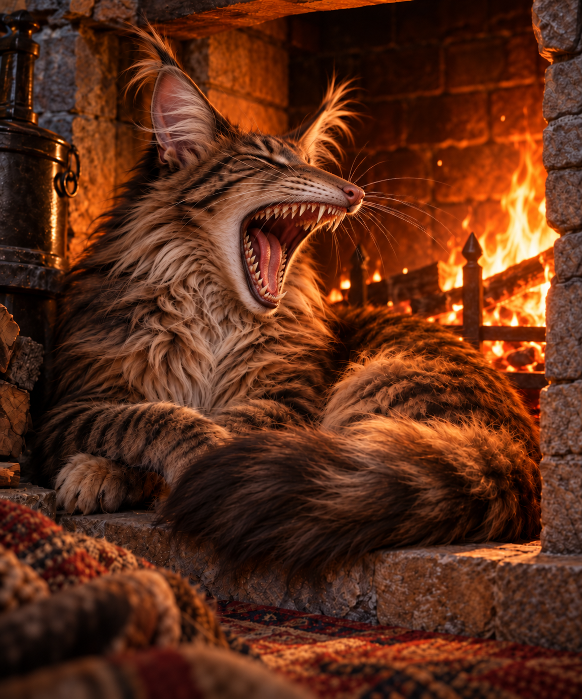

ROLE
Guardian and Companion
Docar stands between vulnerable people and the dangers closing around them.

GUARDIAN CREATURE AND COMPANION
“Not every guardian looks pleased to see the person it protects.”
Powerful. Watchful. Protective. Difficult to ignore. Docar looks dangerous enough to be the threat, which makes discovering its true purpose even more important.
WHO IS DOCAR?
Docar is a guardian creature whose size, strength and watchfulness make it impossible to ignore. At first, Kevin cannot be certain whether its attention means protection or approaching danger.
Docar communicates more through movement, instinct and action than words. What matters is where it stands when danger arrives—and who it places itself between the threat and.
Once its loyalty becomes clear, Docar's presence changes from frightening to reassuring. It may never look pleased to see anyone, but its protection is far more reliable than a friendly expression.
AT A GLANCE
ROLE
Docar stands between vulnerable people and the dangers closing around them.
NATURE
Docar misses very little and reacts quickly when someone under its protection is threatened.
FIRST IMPRESSION
Its appearance makes reassurance difficult until Kevin understands which side Docar is on.
GREATEST STRENGTH
When danger arrives, Docar's actions reveal a loyalty stronger than appearances or words.
STORY APPEARANCES
Docar first appears in The Dra-Conian War, the second book in the Ke'Valien trilogy.
DOCAR'S CLOSEST CONNECTION
Docar's strongest connection is revealed through protection rather than conversation: Kevin learns what its actions mean.
ONE FORMIDABLE GUARDIAN
Docar does not need to look gentle to become a source of safety. What defines this guardian is not its appearance, but the moment it chooses to stand between someone vulnerable and the danger approaching.
Meet the Rest of the Cast